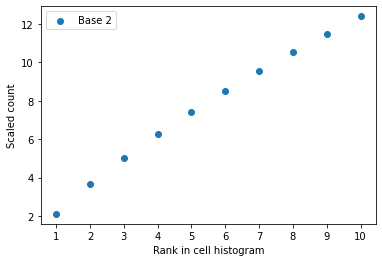
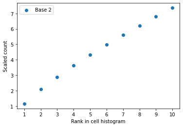

ad=sc.datasets.pbmc3k()Functions to denormlize scRNA-seq data
The main functions of denormlizing the normlized scRNA-seq data
Functions
scdenorm
scdenorm (fin:str, fout:str=None, gxc:bool=False, base:float=None, cont:float=1.0, cutoff:float=0.001, verbose:int=0)
denormalize takes a cell * gene expression matrix that has been normalized according to single-cell RNA sequencing preprocessing procedure and return a recovered count matrix by reversing the logarithmization step and then the total-count normalization step utilizing the unscale function. If the imput matrix is not normalized by first total-count scaling then logarithmization, then the function produces an error indicating so. We also handle matrices that have not been logarithmized. denormalize: csr_matrix -> csr_matrix
| Type | Default | Details | |
|---|---|---|---|
| fin | str | The input file or AnnData | |
| fout | str | None | The path of output file if provided |
| gxc | bool | False | Change to True if the data is stored with gene by cell |
| base | float | None | Give the base if it is known |
| cont | float | 1.0 | The constant plused after scaling |
| cutoff | float | 0.001 | |
| verbose | int | 0 |
get_scaling_factor_1
get_scaling_factor_1 (x)
x is a normlized cell
get_scaling_factor
get_scaling_factor (x, cutoff=0.05)
get_scaling_factor takes a cell vector and its index in the gene expression matrix that has been scaled according to single-cell RNA sequencing preprocessing procedure and return the scaling factor for the cell, or produce an error indicating the cell has not been processed by our assumption. get_scaling_factor: ndarray Nat (Num) -> Num
check_unscale
check_unscale (x, base=2.718281828459045, cont=1, cutoff=0.05, plot=True)
select_base
select_base (x, cont=1, cutoff=0.05, plot=False)
unscale_mat
unscale_mat (smtx, base=2.718281828459045, cont=1, cutoff=0.05)
unscale takes a cell * gene expression matrix that has been quality-controlled and scaled according to single-cell RNA sequencing preprocessing procedure and return a recovered count matrix by finding the scaling factor for each cell, or produce an error indicating the matrix has not been processed by our assumption. unscale: csr_matrix -> csr_matrix
check_plot
check_plot (c, idx, n=10)
Check_plot takes a cell vector and its index in the gene expression matrix and produce a plot of the first N most frequent values against their ranks. Such a plot is used for error-checking in the unscaling process.
create test data
adAnnData object with n_obs × n_vars = 2700 × 32738
var: 'gene_ids'sc.pp.normalize_total(ad, target_sum=1e4)
sc.pp.log1p(ad)
smtx = ad.X.tocsr().asfptype()smtx.dataarray([1.6352079, 1.6352079, 2.2258174, ..., 1.7980369, 1.7980369,
2.779648 ], dtype=float32)Testing check_unscale
x=smtx.getrow(0).datacheck_unscale(x)Truecheck_unscale(x,base=2)ERROR:root:The base 2 is not match with the data.False
Testing scdenorm
mmwrite('data/scaled.mtx', smtx[1:10,])ad1=sc.read('data/scaled.mtx')ad1AnnData object with n_obs × n_vars = 9 × 32738mmwrite('scaled_tran.mtx', smtx.transpose())1.Testing unscale_mat
- input is a sparse matrix with cell by gene
- output is a sparse matrix after denormalization
unscale_mat(ad1.X)100%|██████████| 9/9 [00:00<00:00, 515.05it/s](<9x32738 sparse matrix of type '<class 'numpy.float64'>'
with 7403 stored elements in Compressed Sparse Row format>,
[0, 1, 2, 3, 4, 5, 6, 7, 8])2.Testing scdenorm with right base
scdenorm('data/scaled.mtx',fout='data/scd_scaled.h5ad',base=np.e, verbose=1)INFO:root:Reading input file: data/scaled.mtx
INFO:root:The dimensions of this data are (9, 32738).
INFO:root:denormlizing ...
100%|██████████| 9/9 [00:00<00:00, 750.87it/s]
INFO:root:Writing output file: data/scd_scaled.h5ad3.Testing scdenorm with wrong base
scdenorm('data/scaled.mtx',fout='data/scd_scaled.h5ad',base=2, verbose=1)INFO:root:Reading input file: data/scaled.mtx
INFO:root:The dimensions of this data are (9, 32738).
INFO:root:denormlizing ...
ERROR:root:The base 2 is not match with the data.
ERROR:root:Denormlization has failed. Output the orignal data
INFO:root:Writing output file: data/scd_scaled.h5ad
4.Testing scdenorm without base
scdenorm('data/scaled.mtx',fout='data/scd_scaled.h5ad', verbose=1)INFO:root:Reading input file: data/scaled.mtx
INFO:root:The dimensions of this data are (9, 32738).
INFO:root:select base
INFO:root:denormlizing ...
100%|██████████| 9/9 [00:00<00:00, 1674.67it/s]
INFO:root:Writing output file: data/scd_scaled.h5adscdenorm('data/scaled.mtx', verbose=1)INFO:root:Reading input file: data/scaled.mtx
INFO:root:The dimensions of this data are (9, 32738).
INFO:root:select base
INFO:root:denormlizing ...
100%|██████████| 9/9 [00:00<00:00, 1773.41it/s]View of AnnData object with n_obs × n_vars = 9 × 32738scdenorm(ad1, verbose=1)INFO:root:The dimensions of this data are (9, 32738).
INFO:root:select base
INFO:root:denormlizing ...
100%|██████████| 9/9 [00:00<00:00, 967.00it/s]View of AnnData object with n_obs × n_vars = 9 × 32738